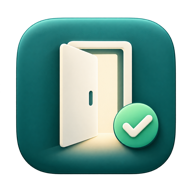

DEIN PLATZ ZUM LERNEN
Raumstupser
Ein Stups. Ein freier Raum.
Was läuft im Raum?
Raum suchen · Griebnitzsee & Golm gleichzeitig
Zeigt die aktuelle Belegung und die nächsten Termine heute.
Deine freien Räume
Raumdaten werden geladen …

Ein Stups. Ein freier Raum.
Raum suchen · Griebnitzsee & Golm gleichzeitig
Zeigt die aktuelle Belegung und die nächsten Termine heute.
Raumdaten werden geladen …